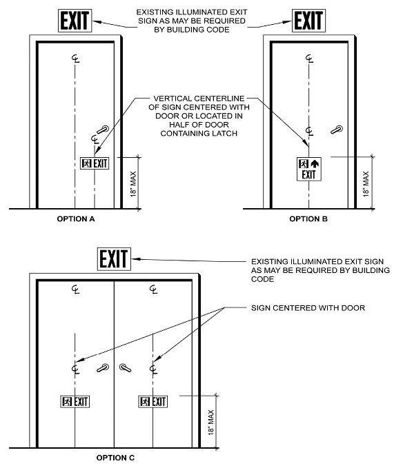
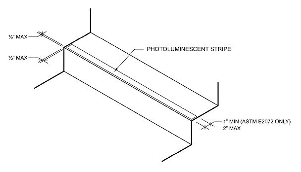
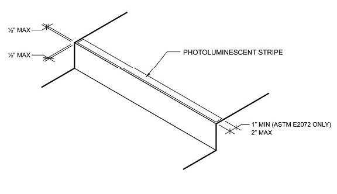
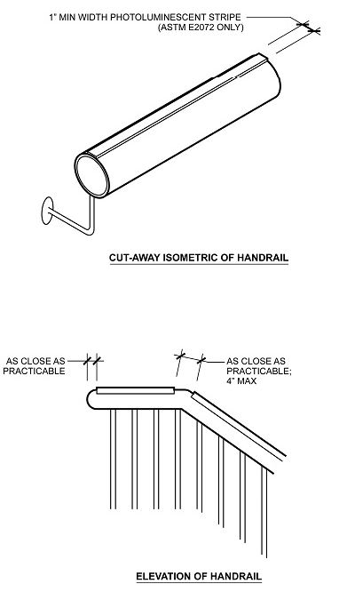
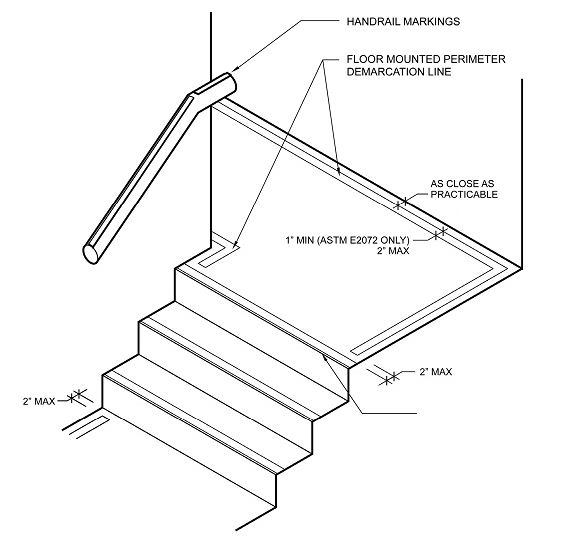

Appendix S: Supplementary Figures for Luminous Egress Path Markings
Section BC S101: General
S101.1 Scope.
The figures of this appendix shall supplement the provisions of luminous egress path markings in Section 1025 and are intended for illustrative purposes. Where there is a conflict between the figures and the provisions in Section 1025, the provisions in Section 1025 shall govern.

Figure S101.1(1) Door-Mounting Options for Photoluminescent Door Signs

Figure S101.1(2) Photoluminescent Markings at Horizontal Leading Edge of Step

Figure S101.1(3) Photoluminescent Markings at Horizontal Leading Edge of Landing

Figure S101.1(4) Photoluminecent Markings on Handrails

Figure S101.1(5) Floor-Mounting Option for Photoluminescent Perimeter Demarcation Lines